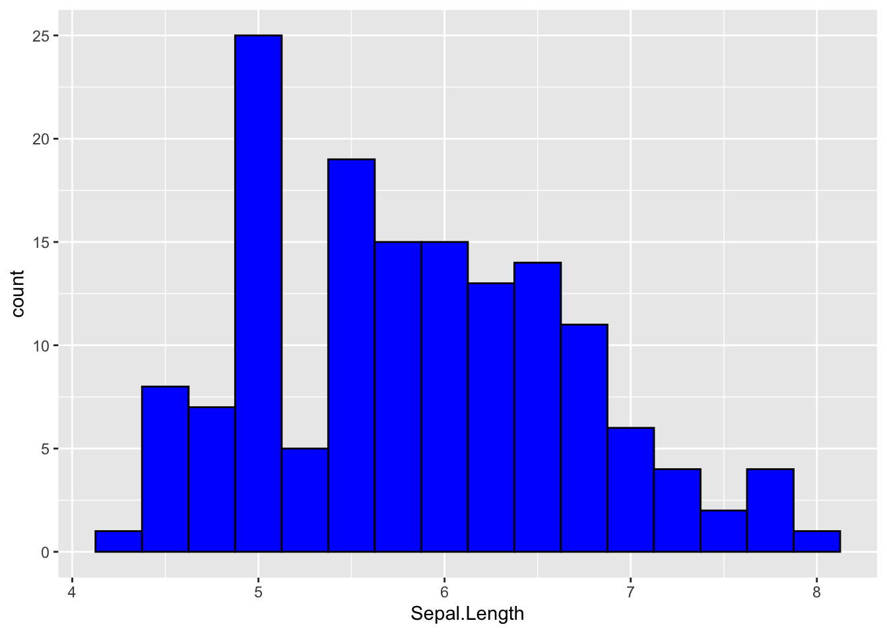
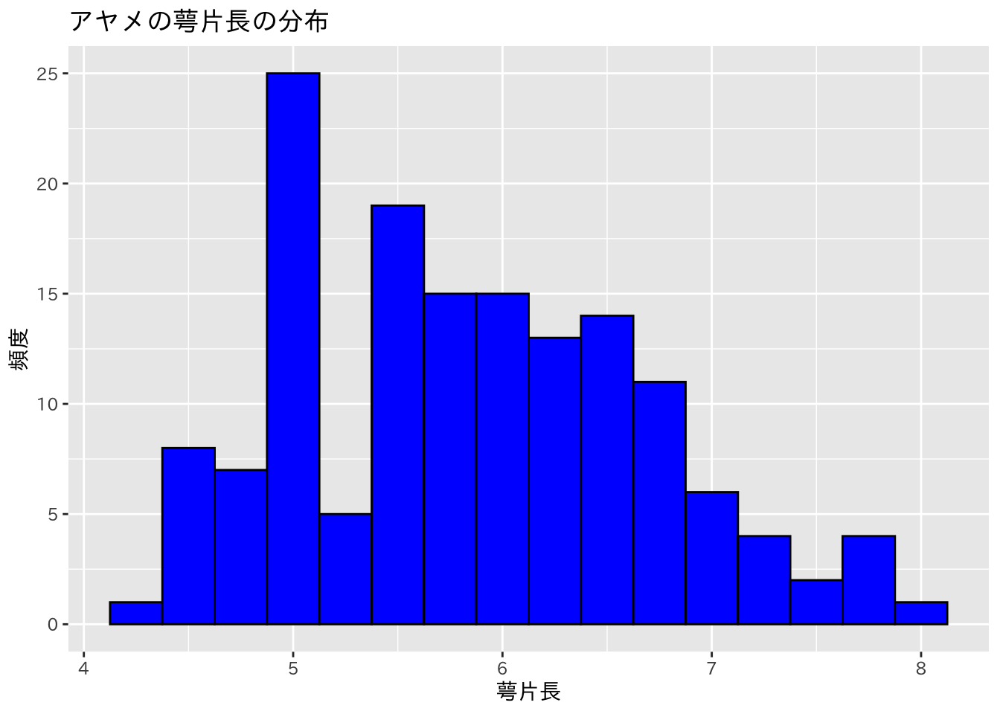
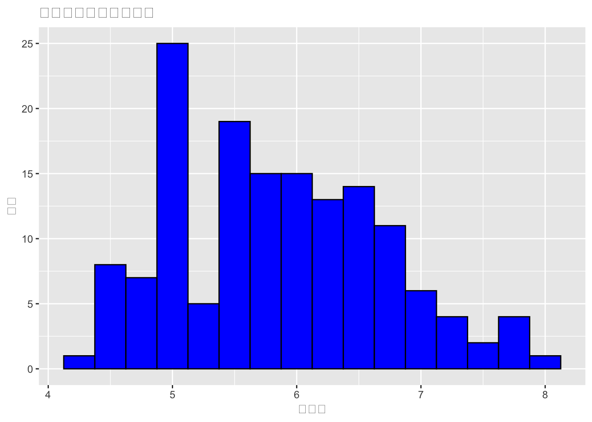

Chapter 5 データの要約2(グラフの作成)
データを概観するためには，記述統計量を求めるとともに，グラフを作成して視覚的にデータの特性を捉えることも重要である。一変数の分布を概観するにはヒストグラム，変数間の関係を概観するには散布図を描いてみるのが有効。
R本体でもさまざまなグラフを作成することができるが，ggplot2というパッケージを用いればより簡単にモダンなグラフを作成することができる。ggplot2は，tidyverseに含まれているので，tidyverseを読み込んでおく。
library(tidyverse)また，練習用データとしてirisを用いる。
iris <- iris5.1 ヒストグラム
まず，150のアヤメの萼片の長さについて，ヒストグラムを作成してみよう。
ggplot2でグラフを作成するには，まずグラフ・オブジェクトを作成する。
g <- iris %>%
ggplot(aes(x=Sepal.Length))ここでは，gというオブジェクトにグラフの素地を作成している。ggplot()関数の振舞いを理解するのは簡単ではないが，まずは決まったやり方を覚えよう。ggplot()関数を使うときには，まずデータフレームとx軸，y軸にとる変数などをaes()で指定しグラフの素地を作成する。ここではggplot()関数にパイプでデータフレームirisを渡し，aes()でグラフのx軸に用いる変数Sepal.Lengthを指定している。ヒストグラムの場合に最低限必要なのは，x軸の変数(ヒストグラムを作成する変数)だけである。
次にヒストグラムを追加する。
g <- g+geom_histogram()このように，ggplotでは作成した素地に，グラフやさまざまなパーツを足していくことで，好みのグラフを作成する。
グラフを表示させるにはplot()関数を用いる。
plot(g)## `stat_bin()` using `bins = 30`. Pick better value with `binwidth`.
とくに何も指定しなくても，Rが適当に区間を分割してヒストグラムを描いてくれる。
このままだと見にくいので，ヒストグラムのビンの幅を変更し，枠線や塗り色を指定してみよう。ヒストグラムの細かい設定は，geom_histogram()の引数に指定すれば良い。
g <- iris %>%
ggplot(aes(x=Sepal.Length))+
geom_histogram(binwidth=0.25,color="black", fill="blue")
plot(g)
次に，グラフの軸のラベルを変更して，グラフ・タイトルをつけてみよう。下のように，グラフ・オブジェクトにlabs()で軸ラベルやタイトルの設定を足す。
g <- iris %>%
ggplot(aes(x=Sepal.Length))+
geom_histogram(binwidth=0.25,color="black", fill="blue")+
labs(x = "萼片長", y = "頻度", title = "アヤメの萼片長の分布")
plot(g)
もし，このグラフのように日本語が文字化けして豆腐みたいになっていたら，フォントを指定する。
#theme_set( theme_gray(base_family = "IPAexGothic"))
plot(g)
ここでは，IPAexGothicフォントを指定している。もちろん，IPAexGothicフォントがパソコンにインストールされている必要がある。IPAフォントのダウンロードやインストール方法の解説は，文字情報技術促進協議会のホームページを見てほしい。
theme_gray()の部分を変更すれば，グラフの見た目を変えることができる。たとえば，theme_bw()に変えれば，背景が白になるので，印刷する場合に見やすい。
5.2 箱ひげ図
一変数の分布だけに関心があるときにはヒストグラムが有用だが，複数の変数の分布を比較したいときには箱ひげ図が便利である。
まず，アヤメの萼片長の箱ひげ図を描いてみよう。
bp <- iris %>%
ggplot(aes(y=Sepal.Length))+
geom_boxplot()
plot(bp)
箱ひげ図の場合には，aes()でy軸に変数を指定してやるだけで良い。ここで，yではなくxを指定すれば，横向きの箱ひげ図を描くことができる。
次に，アヤメの種類ごとに箱ひげ図を描いて，萼片長の分布を比較しよう。
bp <- iris %>%
ggplot(aes(y=Sepal.Length, fill=Species))+
geom_boxplot()
plot(bp)
ggplot関数では，aes()にfillでファクター型変数を指定すれば，指定された変数のレベルごとに塗り色を分けてグラフを描くことができる。ここでは，Speciesを指定して，アヤメの種類ごとに塗り分けてグラフを描いている。
5.3 散布図
次に，変数の間の関係を分析するために，散布図を作成してみよう。ここでは，アヤメの萼片の長さを横軸に，萼片の幅を縦軸にとって，この二変数の関係を表す散布図を作成する。
scatter <- iris %>%
ggplot(aes(x=Sepal.Length, y=Sepal.Width))+
geom_point()
plot(scatter)
散布図の場合は，aes()でx軸の変数とy軸の変数を指定する。あとは，geom_point()を足してやれば，単純な散布図を描くことができる。
散布図も，アヤメの種類ごとに色分けして描くことができる。色分けを行うには，aes()のcolorでファクター型変数を指定すれば良い。この場合は，Speciesによって点の色を変えるので，以下のように書く。
scatter <- iris %>%
ggplot(aes(x=Sepal.Length, y=Sepal.Width, color=Species))+
geom_point()+
labs(x="萼片長",y="萼片幅", title="萼片の長さと幅の関係")
plot(scatter) ここでは，あわせてグラフタイトルや軸のラベルも指定した。
ggplotは利用している人が非常に多いので，インターネット上にいくらでも丁寧な解説がある。使い方を覚えるというよりは，グラフを描く必要があるときに，どうすれば目的のグラフを描くことができるかをググりながら使えば良い。